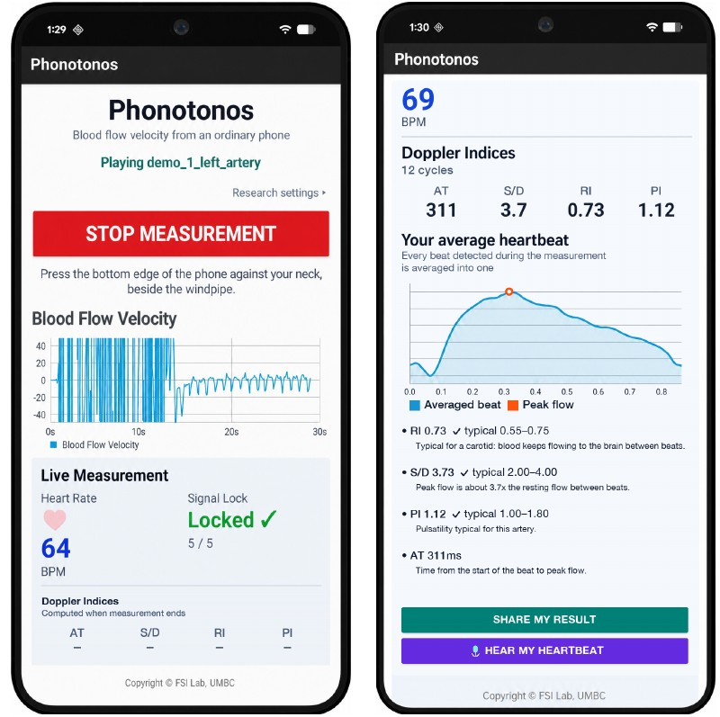
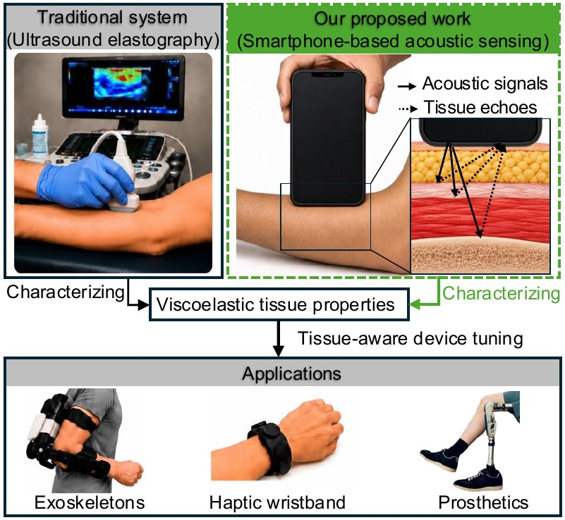
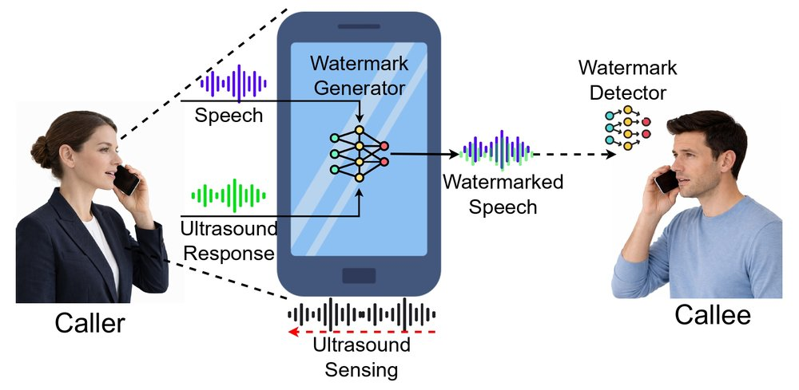

Rishav Gupta
Ph.D. Student in Computer Science
Future Sensing and Interaction (FSI) Lab, University of Maryland, Baltimore County · Baltimore, MD · Advised by Dr. Dong Li
I turn everyday smartphones into cardiovascular sensors: by sending ultrasound through the skin with only the phone's own speaker and microphone, I measure blood flow and tissue properties so that vascular screening can happen anywhere, not just in a clinic.
About
I'm a Ph.D. student in Computer Science at the University of Maryland, Baltimore County (UMBC), where I work in the Future Sensing and Interaction (FSI) Lab with Dr. Dong Li. My research develops smartphone-based methods for cardiovascular health sensing, combining digital signal processing, acoustic sensing, and machine learning to bring meaningful health insights to everyday devices.
Before my Ph.D., I spent over five years as a senior iOS engineer at Gojek and Nuclei, building mobile apps used by millions of people. I'm especially interested in research that bridges low-level sensing with real-world, deployable mobile systems that reach the people who need them.
You may also find my work published under the name Riishav Guptaa.
Research
One idea connects my projects: a phone's speaker and microphone can work as an ultrasonic sensor, with no extra hardware.
-

Measuring blood flow through the skin
Phonotonos recovers arterial blood-flow velocity waveforms with phase-based ultrasonic Doppler on a commodity smartphone, fusing ultrasound with arterial sound and motion sensing to find the artery and reject hand motion. It measures four clinical Doppler indices with accuracy comparable to dedicated medical devices.
-

Reading tissue mechanics with sound
Body-contact devices such as haptic wristbands, exoskeletons, and prosthetics press on soft tissue that differs from person to person. I estimate tissue relaxation time from acoustic chirps and their echoes using a phone's built-in speaker and microphone, a first step toward devices that tune themselves to each wearer.
-

Securing phone calls with ultrasound
AI voice cloning lets scammers impersonate trusted people on calls. Ultrasound Watermark binds live call audio to the caller's articulatory motion (mouth, jaw, and cheek movements sensed with the phone's own ultrasound), which makes the watermark hard to fake.
I work with Dr. Dong Li at UMBC and with collaborators at UMass Amherst, Nanyang Technological University, Indiana University, and Amazon.
Publications
-
Smartphone-based Acoustic Tissue Characterization for Personalized Body-contact Systems
ACM MobiCom 2026 · 32nd International Conference on Mobile Computing and Networking, work-in-progress track · Austin, TX
Abstract
Interactive systems such as haptic wristbands maintain sustained body contact, but variations in soft tissue mechanics can cause the same force to feel different across users. Conventional tissue characterization relies on specialized systems such as ultrasound elastography, limiting its use in personalized devices. We take a first step toward smartphone-based acoustic tissue characterization by investigating if a smartphone can estimate tissue relaxation time using its built-in speaker and microphone. The smartphone probes tissue with acoustic chirps and estimates relaxation behavior from tissue echoes. We validate the approach against laboratory indentation, observing a strong correlation between smartphone and mechanical estimates on a silicone phantom (r=0.96) and a weaker positive correlation on the human forearm (r=0.29). These preliminary results support the feasibility of smartphone-based acoustic tissue characterization for tissue-aware body-contact systems.
BibTeX
@inproceedings{gupta2026tissue, title = {{WiP}: Smartphone-based Acoustic Tissue Characterization for Personalized Body-contact Systems}, author = {Gupta, Rishav and Maguina, Alyssa N. and Weerarathna, Sithumina and Clark, Janelle P. and Li, Dong}, booktitle = {Proceedings of the 32nd Annual International Conference on Mobile Computing and Networking}, series = {MobiCom '26}, year = {2026}, publisher = {ACM}, address = {Austin, TX, USA}, note = {To appear} } -
Phonotonos: Through-Skin Ultrasonic Blood Flow Sensing Using Smartphones
ACM MobiCom 2026 · 32nd International Conference on Mobile Computing and Networking, demo track · Austin, TX
Abstract
Cardiovascular diseases remain a leading cause of death worldwide, motivating accessible tools for vascular health monitoring. This demo presents Phonotonos, a smartphone-based system for through-skin ultrasonic sensing of blood-flow velocity waveforms and Doppler indices. Phonotonos repurposes smartphones for vascular sensing despite their low ultrasound transmit power, coarse spatial resolution, and lack of beamforming. The system combines phase-based ultrasonic Doppler sensing with arterial heart sounds and inertial measurements to localize arteries, mitigate motion interference, and recover blood-flow waveforms. Our demonstration showcases an end-to-end prototype in which users position a smartphone over an artery, receive real-time placement guidance, observe the recovered blood-flow waveform, and obtain clinically relevant Doppler indices. Through this interactive demo, we highlight the feasibility of transforming smartphones into portable and accessible tools for everyday vascular screening and monitoring.
BibTeX
@inproceedings{gupta2026phonotonosdemo, title = {Demo: Phonotonos: Through-Skin Ultrasonic Blood Flow Sensing Using Smartphones}, author = {Gupta, Rishav and Cao, Shirui and Xiong, Jie and Lee, Sunghoon Ivan and Gummeson, Jeremy and Li, Dong}, booktitle = {Proceedings of the 32nd Annual International Conference on Mobile Computing and Networking}, series = {MobiCom '26}, year = {2026}, publisher = {ACM}, address = {Austin, TX, USA}, note = {To appear} } -
Ultrasound Watermark: Real-time Acoustic Watermarking against Voice Scams on Smartphones
ACM/IEEE EdgeSP 2026 · 9th Workshop on Security and Privacy in Edge Computing, co-located with ACM/IEEE SEC 2026 · Santa Clara, CA
Abstract (excerpt)
In this paper, we present Ultrasound Watermark, a real-time, smartphone-native framework for protecting live phone calls against voice impersonation attacks. Recent advances in text-to-speech (TTS), voice conversion (VC), and other AI-driven speech synthesis attacks enable adversaries to convincingly mimic trusted individuals during phone calls, creating a growing threat of voice scams. To defend, we introduce a real-time acoustic watermarking system that binds speech to a caller's physical articulatory motion. During a call, the caller's smartphone continuously emits ultrasonic signals and captures reflections from mouth, jaw, and cheek movements using only the built-in speaker and microphone. …
BibTeX
@inproceedings{hao2026ultrasoundwatermark, title = {Ultrasound Watermark: Real-time Acoustic Watermarking against Voice Scams on Smartphones}, author = {Hao, Renzhi and Cao, Shirui and Wen, Yizhu and Gupta, Rishav and Nadendla, Dharani and Kafai, Mehran and Guo, Hanqing and Li, Dong}, booktitle = {Proceedings of the 9th ACM/IEEE Workshop on Security and Privacy in Edge Computing}, series = {EdgeSP '26}, year = {2026}, publisher = {IEEE}, address = {Santa Clara, CA, USA}, note = {To appear} } -
Phonotonos: Through-Skin Ultrasonic Blood Flow Sensing Using Smartphones
ACM MobiSys 2026 · Proceedings of the 24th Annual International Conference on Mobile Systems, Applications and Services, pp. 911–927
Abstract
Cardiovascular diseases remain the leading cause of death worldwide, and Doppler blood flow indices play a crucial role in their early detection and diagnosis. Existing ultrasound devices, though effective, are costly, bulky, and unsuitable for daily or at-home use. In this work, we introduce Phonotonos, a system that transforms commodity smartphones into portable and accessible tools for through-skin ultrasonic sensing of blood flow velocity. We demonstrate that despite smartphones' inherent limitations—including low ultrasound power, coarse spatial resolution, and lack of beamforming—blood flow velocity waveforms can still be recovered using novel phase-based signal processing, including nonlinearity cancellation and baseline drift removal. We further propose a triple-modality framework that fuses Doppler ultrasound, arterial sound, and IMU for robust artery localization and interfering motion (e.g., involuntary hand motion) rejection. Extensive simulations, phantom experiments, and IRB-approved human studies validate that our proposed system can measure four key Doppler indices (AT, S/D ratio, RI, PI) with accuracy comparable to dedicated medical devices. These results highlight the potential of smartphones to democratize vascular health monitoring and enable continuous cardiovascular screening in everyday environments.
BibTeX
@inproceedings{cao2026phonotonos, title = {[Emerging Ideas] Phonotonos: Through-Skin Ultrasonic Blood Flow Sensing Using Smartphones}, author = {Cao, Shirui and Xiong, Jie and Guptaa, Riishav and Lee, Sunghoon Ivan and Gummeson, Jeremy and Li, Dong}, booktitle = {Proceedings of the 24th Annual International Conference on Mobile Systems, Applications and Services}, series = {MobiSys '26}, pages = {911--927}, year = {2026}, month = jun, publisher = {ACM}, doi = {10.1145/3745756.3809246} }
News
- Appointed Chair of the Graduate Assistant Advisory Committee (GAAC) in the UMBC Graduate Student Association for 2026–2027.
- Received the Computing for Social Good Special Award at COEIT Research Day, presented by Dean Jeanne M. VanBriesen. One of only 2 awards across 114 posters.
- PocketCardio won 1st Place at the Maryland NEW VENTURE™ Program Pitch Night at bwtech@UMBC.
- Received the Best Poster Award at CSEE Research Day, UMBC.
- Received the Best Poster Award at COEIT Research Day, UMBC.
Experience
-
Graduate Research Assistant
Future Sensing and Interaction (FSI) Lab, UMBC · Baltimore, MD
Smartphone ultrasound sensing for cardiovascular health (see Research).
Jun 2025 – Present
-
Senior iOS Engineer
Gojek (GoTo Group) · Bengaluru, India
Built in-house analytics tooling to replace a third-party SDK, and automated the bi-weekly iOS release pipeline.
Feb 2022 – Sep 2024
-
Senior iOS Developer & Team Lead
Nuclei · Bengaluru, India
Founding iOS developer of FedMobile for Federal Bank; promoted to lead a team of four iOS developers.
Jul 2019 – Feb 2022
-
Android Developer Intern
Hera doo · Mostar, Bosnia and Herzegovina
Built an end-to-end Android sales-order application.
Jun – Jul 2018
Education
-
Ph.D., Computer Science
University of Maryland, Baltimore County · Advisor: Dr. Dong Li
Jan 2026 – Present
-
M.S., Computer Science
University of Maryland, Baltimore County · GPA 4.00/4.00
Jan 2025 – Dec 2025
-
B.Tech., Information Technology
Manipal Institute of Technology · Ranked 8th of 132
Jun 2015 – May 2019
Honors & Awards
-
Computing for Social Good Special Award
COEIT Research Day, UMBC · 1 of 2 awards across 114 posters
May 2026
-
1st Place, Maryland NEW VENTURE™ Program Pitch Night
bwtech@UMBC · for PocketCardio
May 2026
-
Best Poster Award
Apr 2026
-
Best Poster Award
May 2025
Service & Leadership
-
Chair, Graduate Assistant Advisory Committee (GAAC)
2026 – 2027
-
HR Head
ISTE Students’ Chapter, Manipal Institute of Technology
2017 – 2018
-
Co-Event Head (Acumen)
TechTatva ’17, Manipal Institute of Technology
Oct 2017
-
Management Committee Member
ISTE Students’ Chapter, Manipal Institute of Technology
2016 – 2017
Contact
The best way to reach me:
rishavg1@umbc.edu
Where I am
Future Sensing and Interaction Lab
Department of Computer Science and Electrical Engineering
UMBC, Baltimore, MD